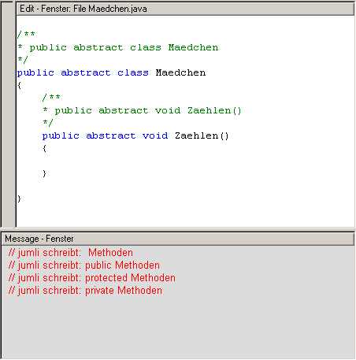

Das Nachrichten-Fenster |
|
Das Nachrichten-Fenster befindet sich beim Start von Jumli unten. Dort kann Text nur angezeigt, nicht aber editiert werden. Dies wird auch durch den grauen Hintergrund des Nachrichten-Fensters verdeutlicht.
|
|
Das Nachrichten-Fenster mit Edit-Infos Befindet man sich im Edit-Fenster, werden die Compile- und Run-Informationen bzw. Debug-Informationen im Message-Fenster angezeigt. Bei einem Programmierfehler, der im Message-Fenster rot angezeigt wird, ist es möglich, durch einen Doppelklick auf den Fehler direkt an die Stelle im Edit-Fenster zu springen, an der der Fehler steht.
Wenn Sie Compilieren oder das Programm mit Run ausgeführt haben ist es sehr wichtig, die Information ' Prozeß beendet!' abzuwarten. Erst dann ist Jumli wieder bereit, weitere Aktionen durchzuführen.
|
|
Zurück zur Fenster Übersicht |
Zurück zur Startseite |